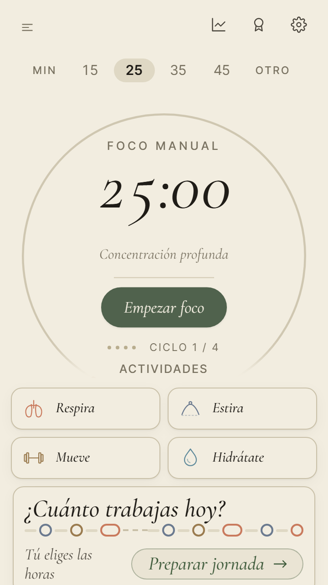
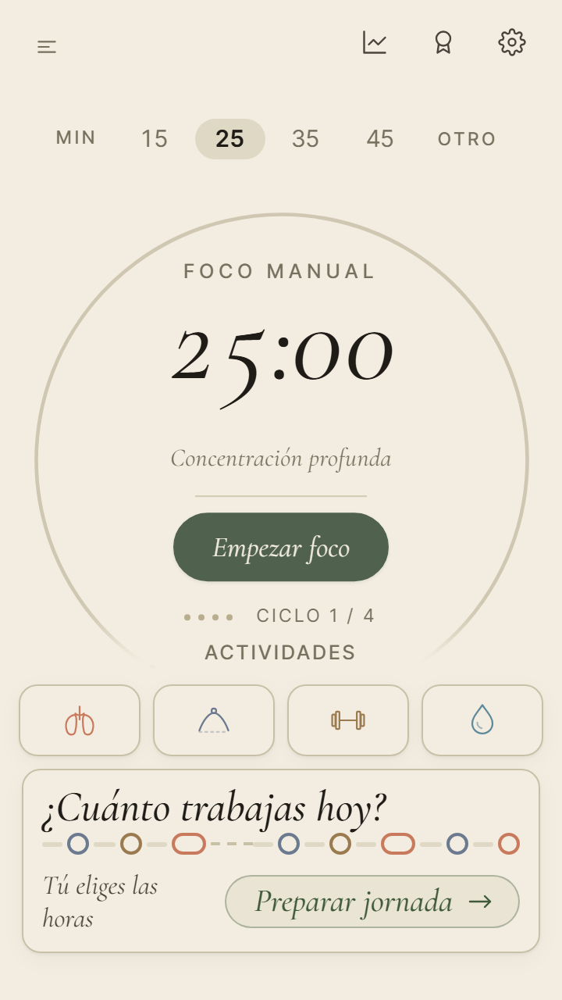
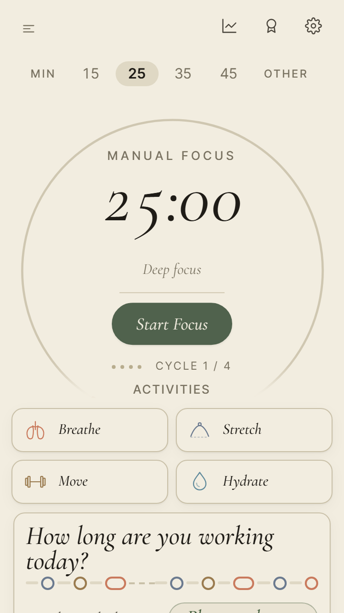
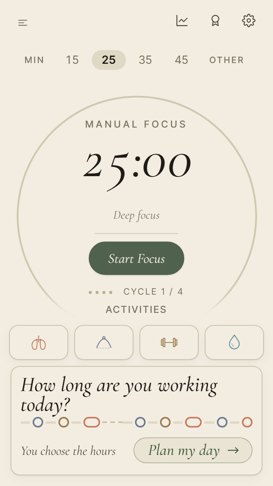
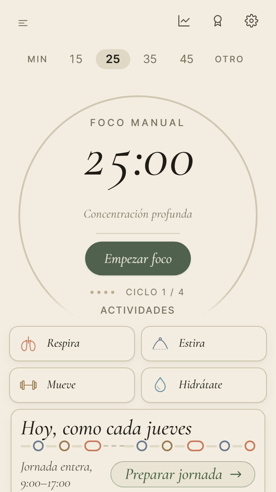
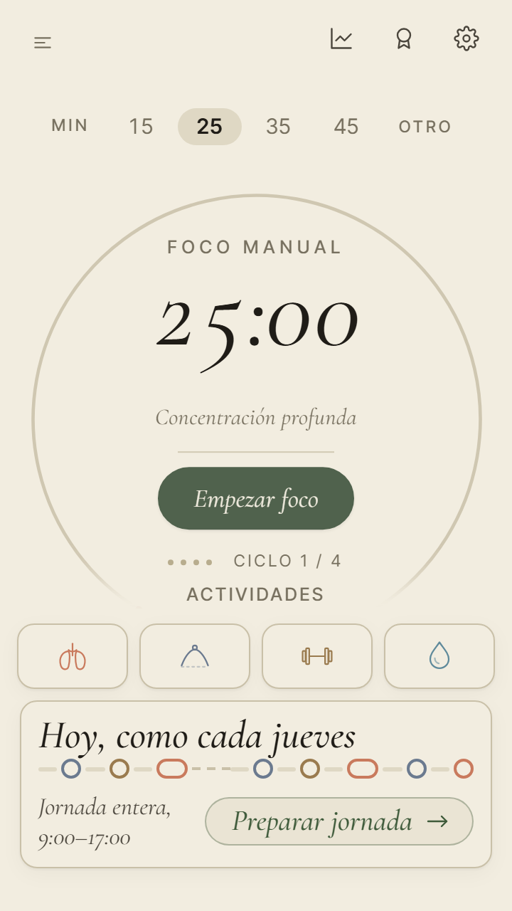
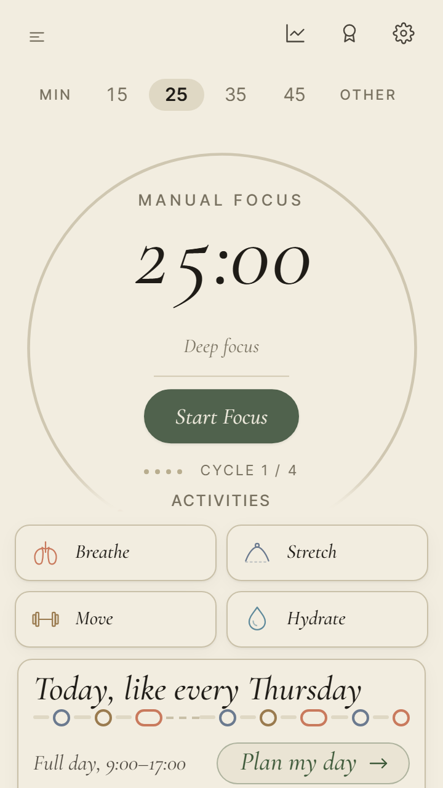
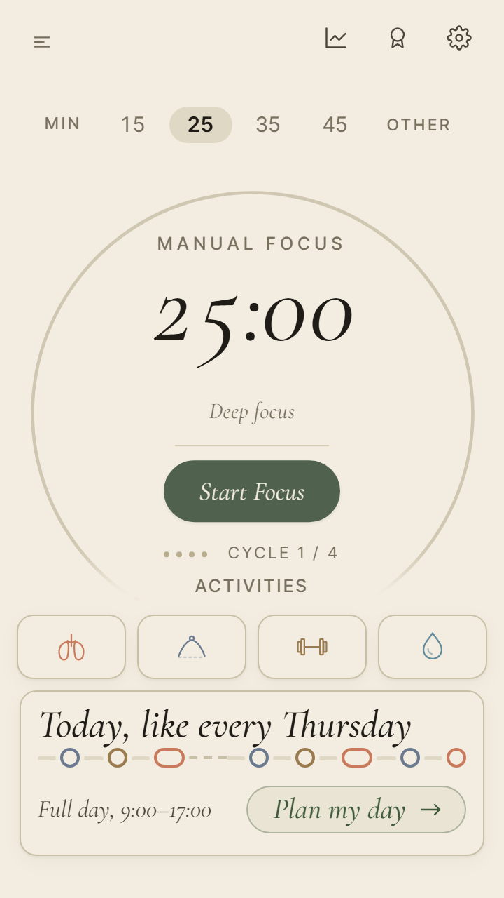
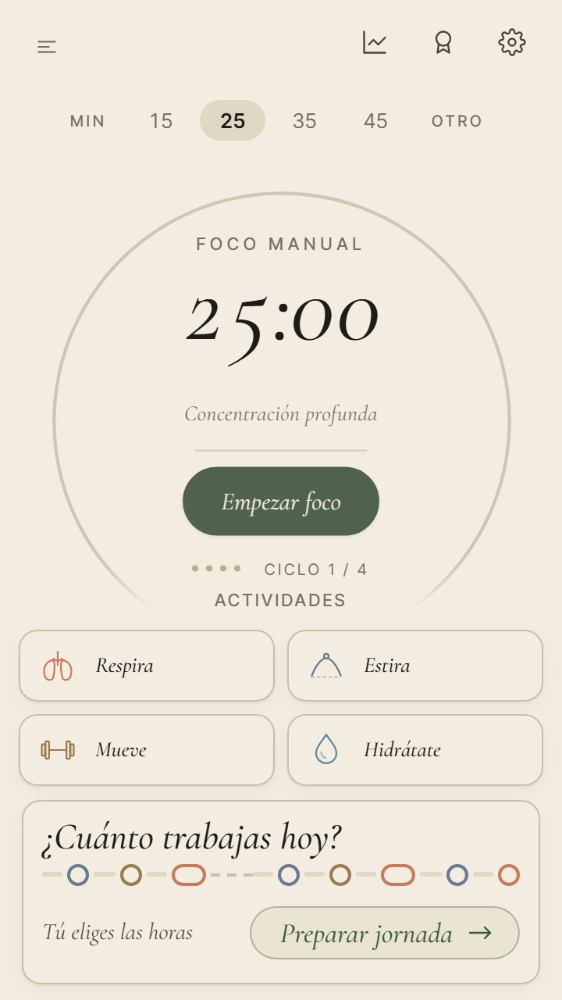
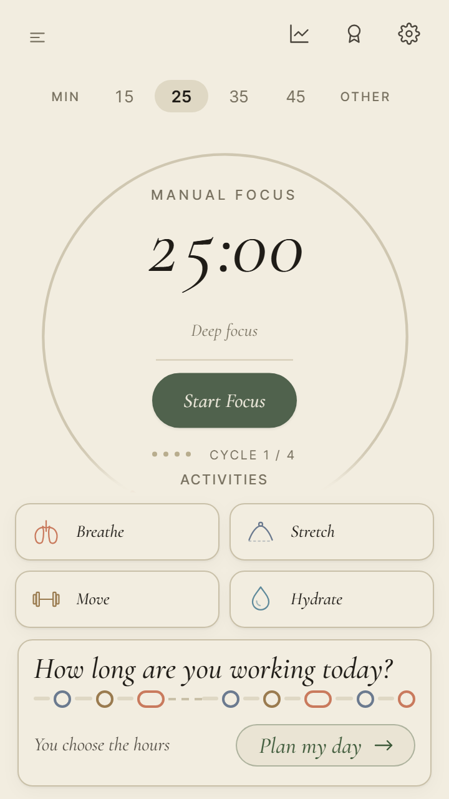

<title>La octava, tercera parte</title>
<meta name="claude:viewport-fit-sides" content="cover">
<link rel="preconnect" href="https://fonts.googleapis.com">
<link rel="preconnect" href="https://fonts.gstatic.com" crossorigin>
<link rel="stylesheet" href="https://fonts.googleapis.com/css2?family=EB+Garamond:ital,wght@0,400;0,500;1,400&family=Inter+Tight:wght@400;500;600&display=swap">
<style>
/* Una columna de papel y tinta, como las otras «Montado»: oliva para lo hecho, terracota para lo que
   espera a Ez. Las capturas van de dos en dos (antes y después) a tamaño de móvil. */
:root{
  --paper:#F2EDE0;--card:#FBF8F1;
  --ink:#1F1C17;--ink-2:#4A453C;--ink-3:#77705F;
  --line:#C9C0A8;
  --olive:#3E5A3A;--olive-soft:rgba(62,90,58,.12);
  --terra:#A85E43;--terra-soft:rgba(168,94,67,.12);
  --display:'EB Garamond',Georgia,'Times New Roman',serif;
  --ui:'Inter Tight',system-ui,-apple-system,'Segoe UI',sans-serif;
}
@media (prefers-color-scheme: dark){:root:not([data-theme="light"]){
  --paper:#1d1a14;--card:#2c271f;--ink:#EDE5D3;--ink-2:#c0b49e;--ink-3:#B2A995;--line:#4d4536;
  --olive:#98B58B;--olive-soft:rgba(122,154,109,.16);--terra:#E8A98F;--terra-soft:rgba(232,169,143,.14);color-scheme:dark;
}}
:root[data-theme="dark"]{
  --paper:#1d1a14;--card:#2c271f;--ink:#EDE5D3;--ink-2:#c0b49e;--ink-3:#B2A995;--line:#4d4536;
  --olive:#98B58B;--olive-soft:rgba(122,154,109,.16);--terra:#E8A98F;--terra-soft:rgba(232,169,143,.14);color-scheme:dark;
}
*{box-sizing:border-box}
body{margin:0;background:var(--paper);color:var(--ink);font-family:var(--ui);font-size:16px;line-height:1.55;-webkit-text-size-adjust:100%}
main{max-width:960px;margin:0 auto;padding-left:max(16px,env(safe-area-inset-left,0px));padding-right:max(16px,env(safe-area-inset-right,0px));padding-block:40px 72px}
h1,h2,h3{font-family:var(--display);font-style:italic;font-weight:400;line-height:1.15;margin:0;text-wrap:balance}
h1{font-size:clamp(32px,6vw,44px)}
h2{font-size:clamp(23px,4vw,28px);margin:52px 0 10px;padding-top:22px;border-top:1px solid var(--line)}
h3{font-size:20px;margin:22px 0 8px}
p{margin:0 0 12px;color:var(--ink-2);max-width:68ch}
strong{color:var(--ink);font-weight:500}
.eyebrow{font-size:12px;letter-spacing:.14em;text-transform:uppercase;color:var(--ink-3);margin-bottom:10px}
.lead{font-family:var(--display);font-size:21px;color:var(--ink);max-width:62ch;margin-top:14px}
.fotos{display:grid;gap:14px;grid-template-columns:repeat(auto-fit,minmax(200px,1fr));margin:16px 0}
.fotos.tres{grid-template-columns:repeat(auto-fit,minmax(190px,1fr))}
figure{margin:0;min-width:0}
figure img{display:block;width:100%;max-width:100%;height:auto;border:1px solid var(--line);border-radius:6px;background:var(--card)}
figcaption{font-size:13px;color:var(--ink-3);margin-top:6px}
figcaption b{font-weight:500}
.mal b{color:var(--terra)}.bien b{color:var(--olive)}
.par{display:grid;gap:10px;grid-template-columns:1fr 1fr;min-width:0}
.bloque{background:var(--card);border:1px solid var(--line);border-radius:8px;padding:14px;min-width:0}
.bloque .t{font-size:12px;letter-spacing:.12em;text-transform:uppercase;color:var(--ink-3);margin-bottom:10px}
.pares{display:grid;gap:14px;grid-template-columns:repeat(auto-fit,minmax(340px,1fr));margin:16px 0}
@media (max-width:420px){.pares{grid-template-columns:1fr}}
.tabla{overflow-x:auto;margin:14px 0}
table{border-collapse:collapse;width:100%;min-width:480px;font-size:14px}
th,td{text-align:left;vertical-align:top;padding:8px 10px;border-bottom:1px solid var(--line)}
th{font-size:12px;letter-spacing:.1em;text-transform:uppercase;color:var(--ink-3);font-weight:500}
td.n{font-variant-numeric:tabular-nums}
.antes{color:var(--ink-3)}.nueva{color:var(--olive);font-weight:500}
.pregunta{border-left:3px solid var(--terra);padding:4px 0 4px 14px;margin:18px 0}
.pregunta p{margin-bottom:6px}
.rec{color:var(--olive)}
ul{padding-left:20px;color:var(--ink-2);max-width:68ch}
li{margin-bottom:6px}
code{font-size:.9em;background:var(--card);border:1px solid var(--line);border-radius:3px;padding:0 4px}
.v{display:inline-block;font-size:12px;border-radius:999px;padding:1px 9px;white-space:nowrap}
.hecho{background:var(--olive-soft);color:var(--olive)}
.falta{background:var(--terra-soft);color:var(--terra)}
</style>

<main>
  <div class="eyebrow">PACE · la octava revisión, tercera parte · 12 nov. 2026</div>
  <h1>La octava, tercera parte</h1>
  <p class="lead">Tu B está montada: con la letra grande del móvil, si la home no cabe, las cuatro actividades van en una sola fila, solo con su dibujo. Y con esto la octava queda entera: las siete pruebas que faltaban y los doce avisos pequeños.</p>
  <p>Juntado en <code>main</code> como la 0.202.0 con tu «1 A, 2 B y júntalo» (12 nov.), con todas las pruebas y GitHub en verde.</p>

  <h2>Las actividades en una fila</h2>
  <p>En la tarjeta corta («¿Cuánto trabajas hoy?») y en el día ya contestado («Hoy, como cada jueves») no hay «Luego» que guardar. Con la letra al 115 % no cabían: ahora Respira, Estira, Mueve y Hidrátate se ponen en una fila, solo con su dibujo, y la home vuelve a caber en los dos idiomas.</p>
  <div class="pares">
    <div class="bloque"><div class="t">Tarjeta corta · español · 360 × 640 · letra al 115 %</div>
      <div class="par">
        <figure class="mal"><figcaption><b>Antes</b> · 21 px de más</figcaption></figure>
        <figure class="bien"><figcaption><b>Ahora</b> · cabe</figcaption></figure>
      </div></div>
    <div class="bloque"><div class="t">Tarjeta corta · inglés · 360 × 640 · letra al 115 %</div>
      <div class="par">
        <figure class="mal"><figcaption><b>Antes</b> · 49 px de más</figcaption></figure>
        <figure class="bien"><figcaption><b>Ahora</b> · cabe</figcaption></figure>
      </div></div>
    <div class="bloque"><div class="t">Día contestado · español · 360 × 640 · letra al 115 %</div>
      <div class="par">
        <figure class="mal"><figcaption><b>Antes</b> · 21 px de más</figcaption></figure>
        <figure class="bien"><figcaption><b>Ahora</b> · cabe</figcaption></figure>
      </div></div>
    <div class="bloque"><div class="t">Día contestado · inglés · 360 × 640 · letra al 115 %</div>
      <div class="par">
        <figure class="mal"><figcaption><b>Antes</b> · 23 px de más</figcaption></figure>
        <figure class="bien"><figcaption><b>Ahora</b> · cabe</figcaption></figure>
      </div></div>
  </div>
  <p>Con la letra normal, a 360 × 640 y más, no cambia nada: siguen las dos filas con su nombre.</p>
  <div class="fotos" style="max-width:480px">
    <figure><figcaption>Letra normal · español · como siempre</figcaption></figure>
    <figure><figcaption>Letra normal · inglés · como siempre</figcaption></figure>
  </div>

  <h3>Cómo lo hace</h3>
  <ul>
    <li><strong>Lo mide, como «Luego».</strong> PACE mira si la home cabe con el aro en su tamaño más pequeño. Si no cabe, prueba con las actividades en fila, y solo las deja así si entonces cabe.</li>
    <li><strong>No parpadea ni baila.</strong> Decide antes de pintar la pantalla, así que nunca ves las dos filas convertirse en una. Una prueba mira cada fotograma al volver a la tarjeta corta.</li>
    <li><strong>El nombre no se pierde.</strong> Lo sigue diciendo el lector de pantalla, sale al dejar el ratón encima, y el tabulador pasa por las cuatro en orden. Un toque en el dibujo abre su biblioteca, como siempre.</li>
  </ul>
  <p>La pregunta del día en inglés (las cuatro opciones del día) sigue pidiendo 17 px con la letra al 115 %: ahí no hay actividades que recoger. Se mide en cada pasada y tiene su tope.</p>

  <h2>Las siete pruebas que faltaban</h2>
  <p>Cada una se ha visto fallar a propósito con el fallo que vigila, para saber que de verdad lo caza.</p>
  <div class="tabla"><table>
    <thead><tr><th>Qué vigila</th><th>Se ha visto fallar si…</th></tr></thead>
    <tbody>
      <tr><td>Con el almacenamiento del navegador lleno para todo, PACE abre, avisa, y un Foco empieza, acaba y se cuenta</td><td>guardar el reloj del Foco rompe la app</td></tr>
      <tr><td>Exportar, borrar todo y traer la copia deja la cuenta igual: logros, tu rutina, tu semana, el Foco, los vasos y el registro</td><td>la semana se corría un día al traer la copia (era un fallo de verdad, arreglado)</td></tr>
      <tr><td>La web tal como se publica: la landing sin nada roto, «Abrir PACE», abrir sin red y las páginas sueltas</td><td>falta una carpeta de la web: las capturas de la landing dan error</td></tr>
      <tr><td>Con la landing delante, cambiar el tamaño de la ventana y el idioma no guarda nada de la app</td><td>el idioma se guarda como si fuera de la app, o algo guarda al cambiar el tamaño</td></tr>
      <tr><td>La home del móvil sin scroll también un lunes, ya en venta, con la barra de «versión nueva» o la de «no deja guardar», midiendo toda la página</td><td>las barras empujan la página (la prueba de antes no lo veía)</td></tr>
      <tr><td>De noche en Los Ángeles y en Calcuta, el vaso, el Foco y la Respira caen en tu día</td><td>el día se calcula con la hora de Greenwich</td></tr>
      <tr><td>Con PACE completo comprado, ninguna pantalla enseña un botón de compra ni un precio; el mensual no se vende sin dónde cancelarlo</td><td>la fila de Ajustes no mira si ya lo tienes; el mensual se vendía sin portal (fallo de verdad, arreglado)</td></tr>
    </tbody>
  </table></div>

  <h2>Dos fallos de verdad, arreglados</h2>
  <ul>
    <li><strong>El mensual sin dónde cancelarlo.</strong> Si un día pones el enlace de pago del mensual y aún no el del portal de Stripe, PACE lo habría vendido, y /premium promete que se cancela desde Ajustes. Ahora el mensual solo sale a la venta con su portal. Hoy no cambia nada: los dos enlaces están vacíos.</li>
    <li><strong>La semana corrida un día al traer una copia.</strong> Si lo guardado no tenía semana (raro en un móvil; habitual en las pruebas), al exportar y volver a traer la copia, el Foco del jueves aparecía el miércoles. Ya no.</li>
  </ul>

  <h2>Los doce avisos pequeños</h2>
  <p>Todos eran de la red de pruebas, no de la app. En pocas palabras:</p>
  <ul>
    <li>Tres pruebas de Respira y las de la compra ya no dependen de la hora a la que se pasen.</li>
    <li>Las pruebas que miraban «que algo no sale» esperaban un rato fijo; ahora mueven el reloj de la página, así que no se engañan con el ordenador cargado.</li>
    <li>Una prueba que daba por buena una escritura sin comprobar que había ocurrido, ahora la comprueba.</li>
    <li>La home sin scroll dice si el aro llegó a asentarse antes de medir, y el inglés va con el navegador en inglés.</li>
    <li>Antes de las pruebas se comprueba que la app que se prueba es la de las fuentes de hoy.</li>
    <li>La revisión automática mira también las imágenes de la landing, y que ninguna página publicada cargue nada de otro sitio ni cuente visitas fuera de /premium.</li>
    <li>Las pruebas de la compra abren de verdad las pantallas para contar botones, y la del mensual ya no se queda sin comprobar nada.</li>
    <li>La revisión automática lleva la cuenta de cada sitio donde PACE guarda algo en el navegador: todos están protegidos por si el navegador está lleno, y uno nuevo no pasa sin que alguien mire si guarda con la landing delante.</li>
  </ul>

  <h2>Lo que elegiste: 1 A y 2 B</h2>
  <p><span class="v hecho">montada</span> <strong>La 2 B.</strong> Si el navegador no deja guardar, la barra de aviso sale con lo primero que no se pueda guardar, sea lo que sea: también al empezar un Foco. Sale una sola vez por visita, sin parpadear, y con la landing delante sigue sin guardarse nada. En el ordenador sale ya al abrir PACE, porque lo primero que intenta guardar es el tamaño del aro. Dos pruebas lo vigilan: una con todo lleno y otra en la que solo falla el reloj del Foco.</p>
  <p><span class="v hecho">se queda</span> <strong>La 1 A.</strong> En móviles más bajos, la fila de actividades sale también con la letra normal si así cabe.</p>
  <h3>Lo que preguntaba</h3>
  <div class="pregunta">
    <p><strong>1. En móviles más bajos, la fila también sale con la letra normal.</strong> Como «Luego»: PACE no sabe a qué tamaño tienes la letra, solo mide. En pantallas de menos de 640 de alto (360 × 600, o 320 × 568 en español), la tarjeta corta no cabía y pedía deslizar; ahora pone las actividades en fila y cabe.</p>
    <p><strong>A.</strong> Dejarlo así: la misma regla para todo, y la home sin scroll en más móviles.</p>
    <p><strong>B.</strong> Que solo salga con la letra grande. Habría que adivinar la escala del sistema, y en esos móviles bajos volvería el scroll.</p>
    <p class="rec">Recomiendo la A: es tu regla de «sin scroll de ninguna forma», y es lo mismo que ya hace «Luego».</p>
  </div>
  <div class="pregunta">
    <p><strong>2. Con el navegador sin poder guardar, la barra de aviso sale al acabar el Foco, no al empezarlo.</strong> Empezar un Foco solo guarda su reloj; si cierras PACE a mitad, ese bloque se pierde sin que la barra lo haya dicho.</p>
    <p><strong>A.</strong> Dejarlo así.</p>
    <p><strong>B.</strong> Que la barra salga con lo primero que no se pueda guardar, también al empezar un Foco.</p>
    <p class="rec">Recomiendo la B: la barra dice «lo que hagas se perderá al cerrar PACE», y con la B lo dice antes de perder nada.</p>
  </div>
  <ul>
    <li><span class="v falta">en tu móvil</span> abrir PACE con la letra grande y mirar la tarjeta corta y el día servido. Aquí se imita agrandando un 15 % cada texto.</li>
  </ul>
</main>
